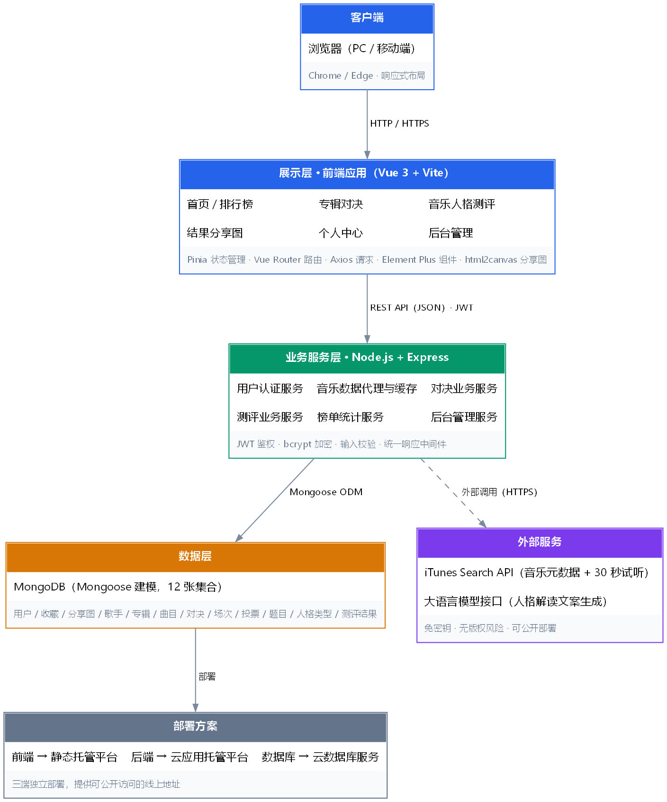
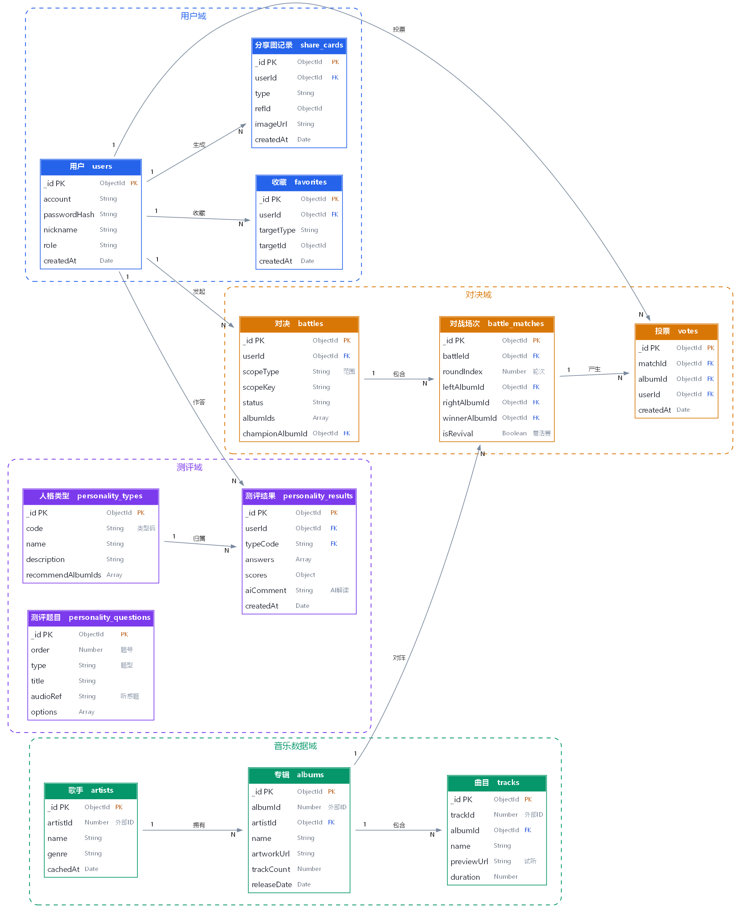
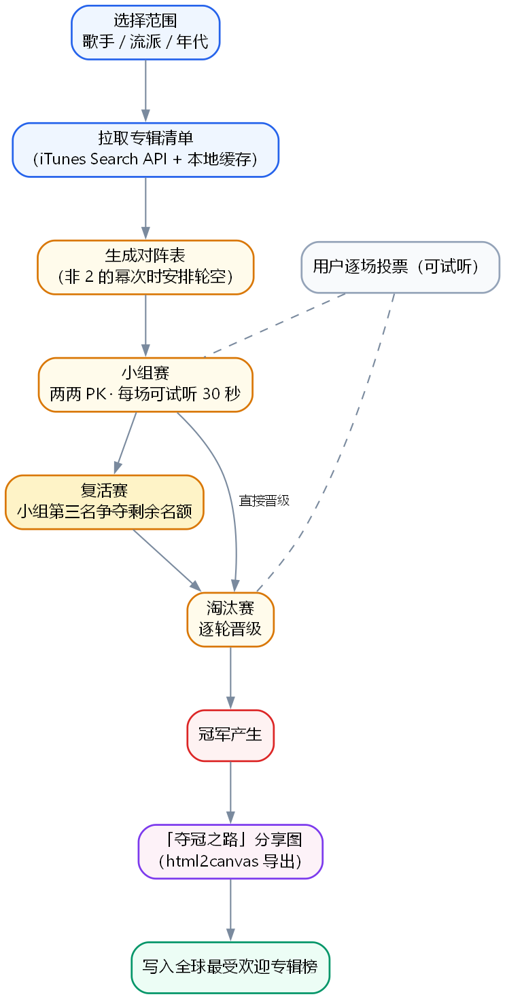

给胡祖锐的专属版：GitHub 从零会、答辩怎么讲、架构怎么看、下一步做什么。
看不懂任何一处，直接说"这里没懂"，我换一种讲法。
只需要懂三个词。别的都不用管。
你这个游戏的整个存档文件夹。音格的仓库叫 yinge。
按一次"存档"。存完之后，随时能读回这一时刻的全部代码。
把本地存档上传到云端。只有上传了，老师才能点开链接看到。
打开 GitHub Desktop（你电脑上那个黑色图标的软件）
update。这是可选的——我也能帮你做。你担心的"改坏了想退回去"，其实有三道保险，都不需要你操作命令行：
| 保险 | 什么时候用 | 谁来做 |
|---|---|---|
| 备份目录 | 我每次改你的重要文件前，都会先复制一份到 _backup\日期_事由\ | 我自动做 |
| Git 提交点 | 每个阶段存一次档，可以精确回到"某个版本" | 我自动做 |
| 你开口 | 你说"把 XX 退回上一版" / "退回到做 ER 图之前" | 我立刻做 |
# 1. 先看有哪些存档点 git log --oneline # 输出示例： # beed7f7 补齐论文工具链与专业图表生成 ← 最新 # d6500e8 工具链说明切换首选链路 # 4e6326b 开题报告改用 python-docx 直出引擎 # 2. 只想退某一个文件（最安全，推荐） git checkout 4e6326b -- docs/开题报告.md # 3. 整个项目退回到某个存档点 git reset --hard 4e6326b你不需要记这些命令。你只要说人话，我翻译成命令。
这个问题分三层，结论先给：开一次 GitHub Pages，以后一个网址看全部。
| 情况 | 能不能看 | 说明 |
|---|---|---|
| 对方下载了 html 文件 | 能看 | 双击用浏览器打开即可，不用装任何软件。前提是该 html 没有引用外部文件。 |
| 在 GitHub 网页上点 html | 只看到代码 | GitHub 只当它是普通文件，不负责渲染成网页。这是平台规则，不是文件的问题。 |
| 开启 GitHub Pages | 能看，有网址 | GitHub 免费提供的网页托管。开启后得到一个 https://joruine.github.io/yinge/ 这样的链接，任何人点开就能看。 |
https://github.com/JORUINE/yinge，点右上角 Settings
如果看不到 Settings，说明没登录，先登录。Pages，点进去
位置在左侧列表偏下方，在 "Actions" 和 "Security" 附近。找不到就按 Ctrl+F 在页面上搜 "Pages"。Deploy from a branch
Branch 选 main，右边文件夹选 /docs，然后点 Save。https://joruine.github.io/yinge/你花钱买的是"我干活+你懂原理"。所以分成三类，别误会成"全自动"。
| 类别 | 具体事项 | 归属 |
|---|---|---|
| 我来做 | 写代码、生成文档/图表/PPT、设计界面稿、写论文初稿、备份、Git 提交、排查报错、准备部署配置 | 我做 |
| 你点一下 | GitHub Desktop 的 Push；注册云服务账号；录演示视频；答辩 | 你做 |
| 我教你会 | 架构怎么讲、技术选型为什么这么选、数据怎么流、遇到提问怎么答 | 一起 |
六个必被问到的问题。每张卡：我们做了什么 → 为什么这么做 → 你照这个说。
我们做了什么：最早确实走的是网易云第三方接口，实测发现它对本机网络启用了风控，
登录和取播放地址都返回 code: -462，连本地也调不通。后来换成 iTunes Search API。
为什么这么做：iTunes 接口不需要密钥、不需要登录、不会被风控，任何域名都能调， 而且官方提供 30 秒试听片段——这让我们能在不触碰版权问题的前提下，拿到真实可播放的音乐数据， 并且项目可以公开部署上线。
我们做了什么：前端 Vue 3 只负责界面和交互，后端 Node.js + Express 负责业务规则， 中间用 REST 接口通信，数据存 MongoDB。
为什么这么做：（1）规范赛道 C 明确要求"后端完整"； （2）音乐数据和大模型密钥绝不能放在前端，必须由后端代理； （3）前端可以独立部署到静态托管、后端独立部署到云应用平台，两边互不干扰。
我们做了什么：用户选定范围后，系统抓取该歌手的全部专辑，自动生成对阵表； 先小组赛两两 PK，再插入复活赛，最后淘汰赛出冠军。
关键难点：专辑数量往往不是 2 的整数次幂（比如 11 张）， 直接两两配对会出现"落单"的专辑。所以要处理轮空（bye）问题。
为什么加复活赛：纯淘汰赛"输一场就没了"，用户投到一半容易失去动力。 复活赛既保住悬念，又不显著拉长时长。
我们做了什么：12 道题，每题选项对应若干维度的分数； 作答完成后累加各维度得分，映射到人格类型。
为什么这么做：（1）每道题的分数是预先设计的，不是答题后随机生成； （2）包含听感题（要听了 30 秒片段再答），这是音乐类测评区别于普通问卷的地方； （3）同一份答案必然得到同一结果，保证可复现。
我们做了什么：人格测评出结果后，把作答组合 + 类型 + 得分分布作为输入， 调用大语言模型生成一段个性化解读文案。
为什么这么做：传统 MBTI 类测试"同一类型的人拿到一模一样的文案"， 个性化程度低。用大模型可以让解读贴合这个人的具体作答。 同时要设计降级机制——接口失败时用模板兜底，界面上不暴露错误。
我们做了什么：先把业务对象分四类——用户域、音乐数据域、对决域、测评域， 再从每类里提取实体，最后确定关系和主外键。
设计取舍：专辑、曲目这些外部数据也落库缓存，而不是每次现查。 原因是降低外部依赖、提高响应速度、规避接口调用频率限制。

怎么读这张图（从上往下）：

答辩时的讲法：别一张张念表。按四个域讲——
用户、收藏、分享图记录
对应"登录和我的内容"
歌手、专辑、曲目
外部数据抓来后落库缓存
对决、对战场次、投票
一次对决 = 1 条对决 + N 条场次 + M 条投票
测评题目、人格类型、测评结果
题目 → 作答 → 结果 → 归属类型
这段一定要能顺口讲出来，它是"数据驱动"（规范第 3 条硬要求）最直接的证据：
battles 记录 + N 条 battle_matches 记录（每一场是左右两张专辑）previewUrl（30 秒官方片段）——数据在第一步就存好了，不用再请求外部votes 记录 → 同时更新该场次的 winnerAlbumId（谁赢了）→ 下一轮对阵据此生成battles.championAlbumId（冠军）→ 榜单统计时聚合所有 votes，得出"全球最受欢迎专辑"share_cards 记录，保存这张图的归属，方便你在"我的分享"里找回
personality_questions 按 order 顺序取 12 题；含听感题的会带一个 30 秒试听typeCode → 写 1 条 personality_results严格对照《2027届数字媒体技术专业毕业作品规范方案》赛道 C 的提交清单。
| 规范要求 | 具体内容 | 现状 |
|---|---|---|
| 需求分析文档 | 用户故事、功能需求清单、非功能需求（性能/安全） | 下一步做 |
| 系统设计文档 | 系统架构图、数据库 ER 图、API 接口文档 | 图已完成 缺 API 文档 |
| UI 设计稿 | PC 端 + 移动端，至少 15 个页面 | 未开始 |
| 源代码仓库 | 含 README、.gitignore、环境配置说明 | 已建 |
| 线上演示地址 | 部署至 Vercel / 云平台，提供可访问 URL | 未开始 需你注册账号 |
| 演示视频 | 1-3 分钟 MP4 1920×1080，含前后台操作 | 未开始 需你录屏 |
| 毕业论文 | ≥10000 字，参考文献 ≥10 条（英文 ≥2 条） | 未开始 |
为什么先做它：规范把它列在第一个。它还是后面所有东西的源头—— 界面稿要做哪些页面、数据库要有哪些字段、接口要开哪些，都从这里推导。跳过它， 后面就会出现"做着做着发现少个页面"。
我会产出什么：
格式：Word（走已验证的通路，带目录与页码），同时给一份可视化 HTML 方便你看。
| 步骤 | 产出 | 说明 |
|---|---|---|
| 1 | 需求分析文档 | ← 下一步，等你批准 |
| 2 | API 接口文档 | 补齐系统设计文档的最后一块；用 Swagger/Postman 导出 |
| 3 | UI 设计稿（18 页） | PC + 移动端，产出可点开的 HTML 原型 |
| 4 | 后端 + 数据库实现 | 先让接口能跑、数据能存 |
| 5 | 前端页面与两条玩法 | 对决 + 测评完整流程打通 |
| 6 | 云部署上线 | 需要你注册 Vercel / Atlas 账号 |
| 7 | 论文 + 演示视频 | 论文 ≥10000 字；视频 1-3 分钟 |